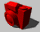
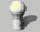
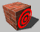
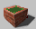

Toolbars: Map Tools

 Selection Tool
Selection Tool
The Selection Tool allows you to accomplish a number of things. It is used to select, resize, rotate, shear, and move objects.
 Magnify Tool
Magnify Tool
The Magnify Tool allows you to increase the magnification factor of the 2D views. Click once in a 2D view to increase the magnification level. Zoom back out again by clicking the right mouse button. Zoom in and out can also be accomplished by pressing the “+” and “-“ keys on the numeric keypad while the mouse cursor is in a 2D view. The mouse wheel can also be used to zoom in and out.
 Camera Tool
The Camera Tool allows you to place and modify cameras within your level. More information can also be found in The 3D and 2D Views.
 Entity Tool
The Entity Tool allows you to place point-based entities in a map. Point-based entities are those entities which exist only at a point, and do not rely on a brush for their effect. Also see Applying Materials to Solids.
Block Tool
This is the basic creation tool in Hammer. The Block Tool allows you to create any of the different types of primitive shapes and prefab objects in the New Objects Bar. Also see Creating Brushes for additional information.
 Toggle Texture Application
Toggle Texture Application
This button toggles the Texture Application mode on and off. Texture Application mode allows you to edit the properties of individual brush faces and create displacement surfaces. For more information, see Face Edit mode.
 Apply Current Texture
Apply Current Texture
When Apply Current Texture is pressed, the current texture selected in the Textures Bar is applied to all faces of the selected brushes, replacing all textures existing on the objects. Texture scale and shift parameters are unchanged – the new textures will use the existing parameters on the objects.
 Apply Decals
The Apply Decals tool is used to place decals upon objects. A decal is a texture that can be placed on top of another texture, combining the two.
 Overlay Tool
The Overlay Tool is used to place overlays upon brush and displacement surfaces. An overlay is similar to a decal, but has some additional properties to control how the overlay is applied to the underlying surface.
 Clipping Tool
Clipping Tool
The Clipping Tool allows you to slice the currently selected brush using clip planes. Clip planes enable you to precisely make a cut in a solid, leaving you the option to keep either or both parts of the resulting two solids. Also see Reshaping Solids.
 Vertex Tool
Vertex Tool
Vertex manipulation gives you complete control over the shape of a solid object. Using the Vertex Tool, you can reshape the object by manipulating individual vertices and brush edges, easily creating odd (and sometimes invalid) shapes. Also see Reshaping Solids.
© 2004 Valve Corporation. All rights reserved. Valve, the Valve logo, Half-Life, the Half-Life logo, the Lambda logo, Steam, the Steam logo, Team Fortress, the Team Fortress logo, Opposing Force, Day of Defeat, the Day of Defeat logo, Counter-Strike, the Counter-Strike logo, Source, the Source logo, Hammer and Counter-Strike: Condition Zero are trademarks and/or registered trademarks of Valve Corporation. Microsoft and Visual Studio are trademarks and/or registered trademarks of Microsoft Corporation. All other trademarks are property of their respective owners.